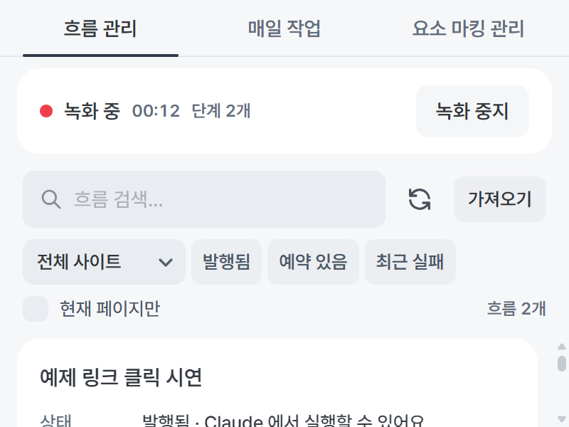
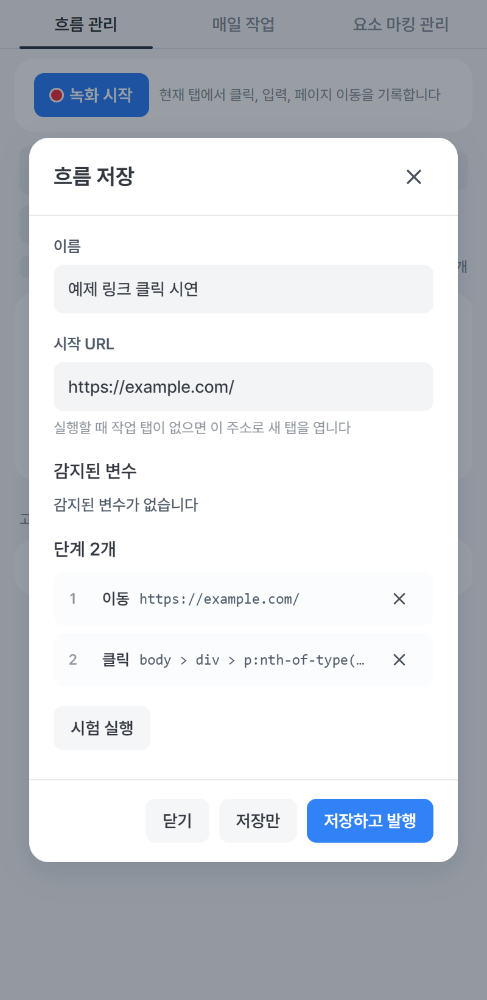
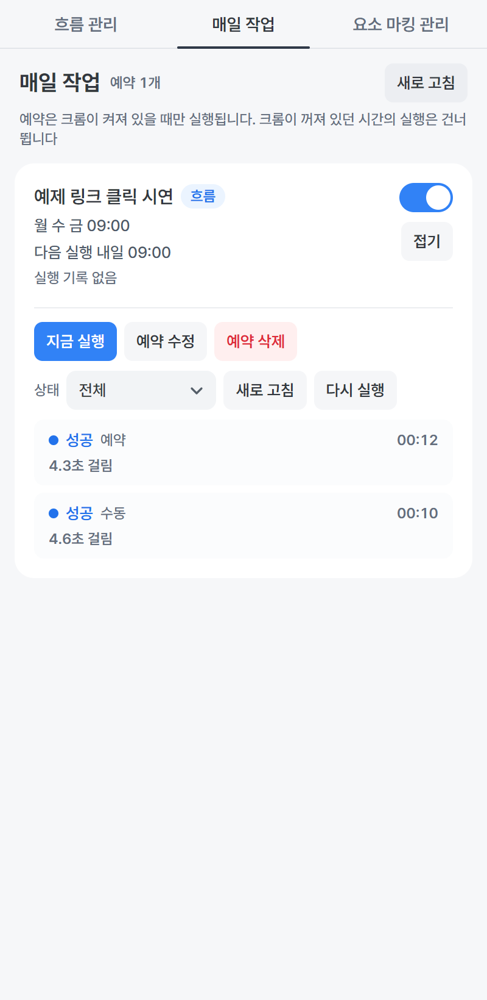
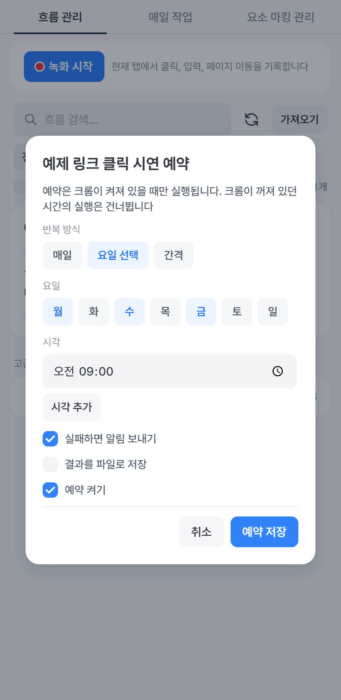

Auto Chrome MCP
크롬에서 하던 일을
녹화해 두고, 매일 자동으로
초보자를 위한 그림 사용설명서 · 사이드패널 편
1
녹화
한 번 직접 해 보이면 저장돼요

2
발행
이름 확인하고 버튼 하나

3
예약
매일 그 시각에 크롬이 스스로

차례
- 1이 프로그램은 무엇을 하나요3
- 2팝업에서 연결 확인하기4
- 3사이드패널 여는 방법과 화면 구성5
- 4첫 흐름 녹화하기6
- 5저장 화면 읽는 법7
- 6흐름 카드 읽는 법8
- 7실행하기와 결과 보기9
- 8매일 자동으로 실행하기10
- 9매일 작업 탭에서 관리하기11
- 10필터와 더보기 메뉴12
- 11흐름 내보내기와 가져오기13
- 12문제가 생겼을 때14
- 13Claude Code 에서 말로 시키기15
- 14우클릭 메뉴와 단축키16
- 15자주 묻는 질문과 용어17
읽는 법그림 위의 파란 번호와 옆 설명의 번호가 같습니다. 파란
상자는 팁, 주황 상자는 주의, 빨간 상자는 꼭 알아야 할 제한입니다.
1장
이 프로그램은 무엇을 하나요
크롬에서 매일 반복하는 일을 한 번만 직접 해 보이면, 그 과정을 흐름이라는 이름으로
저장하고 나중에 똑같이 다시 해 줍니다. 크롬 오른쪽에 붙는 사이드패널에서 모든 것을
합니다.
사이드패널의 흐름 관리 탭
- 1녹화 시작 사이트에서 평소처럼 한 번 해 보이면 그대로
기록됩니다.
- 2흐름 카드 저장한 흐름 하나가 카드 하나입니다. 상태,
사이트, 마지막 실행 결과가 보입니다.
- 3실행 지금 바로 한 번 돌립니다. 뒤에서 새 탭이 열려
조용히 움직입니다.
- 4예약 매일 정해진 시각에 돌리도록 겁니다.
이런 일에 씁니다
매일 아침 특정 사이트에서 숫자 확인하기, 같은 메뉴를 눌러 자료 내려받기, 여러 번
반복해서 눌러야 하는 클릭 작업.
주의예약 실행은 크롬이 켜져 있을 때만 됩니다. 크롬을 닫아 둔
시간의 예약은 건너뜁니다.
2장
팝업에서 연결 확인하기
크롬 오른쪽 위 확장 아이콘을 왼쪽 버튼으로 누르면 팝업이 뜹니다. 파란 점과
서비스 실행 중이 보이면 준비된 것입니다.
- 1매일 작업 사이드패널의 매일 작업 탭이 바로 열립니다.
- 2연결 상태 파란 점 + 서비스 실행 중이면 정상. 빨간 점이면
⑤ 강제 재연결.
- 3등록 prompt 복사하기 Claude Code 와 연결할 때 한 번만
씁니다(13장).
- 4백그라운드 작업 켜 두면 실행 중에 보고 있던 탭을
건드리지 않습니다. 기본값 그대로 두세요.
- 5강제 재연결 연결이 이상할 때 누릅니다.
- 6진단 리포트 문제를 물어볼 때 복사해서 보내는
정보입니다.
3장
사이드패널 여는 방법과 화면 구성
여는 방법 셋 중 아무거나
- 아이콘 우클릭 확장 아이콘을 마우스 오른쪽 버튼으로 누르고
사이드패널 열기를 고릅니다.
- 팝업 버튼 팝업 오른쪽 위 매일 작업을 누릅니다.
- 단축키 Ctrl + Shift +
Y
흐름 관리 탭 · 녹화하고 실행하는 곳
매일 작업 탭 · 예약을 관리하는 곳
- 1흐름 관리 가장 많이 쓰는 탭입니다. 녹화, 카드, 실행이
여기 있습니다.
- 2매일 작업 예약을 걸어 둔 흐름과 실행 결과가 여기
모입니다. 처음엔 비어 있습니다.
- 3요소 마킹 관리 고급 기능입니다. 처음에는 쓰지 않아도
됩니다.
팁맨 위 탭은 키보드 화살표 왼쪽 오른쪽으로도 옮길 수
있습니다.
4장
첫 흐름 녹화하기
녹화는 "내가 하는 걸 지켜봐 줘" 입니다. 시작을 누르고 평소처럼 하면 됩니다.
녹화 전 · 녹화 시작 버튼
녹화 중 · 빨간 점과 경과 시간
- 녹화할 사이트를 먼저 엽니다. 크롬 탭에서 그 사이트의 시작 페이지를 띄웁니다.
- 녹화 시작을 누릅니다. 그 순간 보고 있던 탭이 녹화 대상이 됩니다.
- 사이트에서 평소처럼 합니다. 클릭, 글자 입력, 다른 페이지로 이동이 전부
기록됩니다. 패널 위쪽 표시줄에 경과 시간과 단계 수가 올라갑니다.
- 다 했으면 녹화 중지를 누릅니다. 저장 화면이 자동으로 뜹니다. 다음 장에서
이어집니다.
팁아이콘 우클릭 메뉴의 이 탭에서 녹화 시작을 쓰면 패널을
열지 않고도 바로 녹화가 시작됩니다.
주의녹화 중에는 다른 탭으로 옮기지 마세요. 시작한 탭에서 일어난
일만 기록합니다.
5장
저장 화면 읽는 법
녹화를 멈추면 뜨는 화면입니다. 위에서 아래로 한 번 훑고 저장하고 발행을 누르면
끝입니다.
녹화 직후 뜨는 저장 화면
- 1이름 사이트 이름과 날짜가 자동으로 들어갑니다.
알아보기 쉬운 이름으로 바꾸세요. 예: 아침 재고 확인
- 2시작 URL 녹화를 시작한 페이지 주소. 실행할 때 이
주소를 먼저 엽니다. 그대로 두면 됩니다.
- 3감지된 변수 녹화 중 입력한 글자 중 매번 달라질 수 있는
값입니다. 비밀번호 칸은 자동으로 민감 표시가 되고 저장되지 않습니다.
- 4단계 기록된 동작 목록. 잘못 누른 단계는 오른쪽 × 로
지웁니다.
- 5시험 실행 저장 전에 한 번 돌려 봅니다. 결과가 이 화면
안에 표시됩니다.
- 6저장만 발행하지 않고 보관만 합니다.
- 7저장하고 발행 이 버튼을 누르면 끝입니다. 발행이 되어야
실행과 예약이 됩니다.
발행이 뭔가요"이 흐름을 써도 좋다"고 확정하는 것입니다.
발행된 흐름만 실행 버튼, 예약, Claude 에서 쓸 수 있습니다.
제한민감 표시가 된 값은 저장되지 않습니다. 그런 값이 있는
흐름은 예약할 수 없고 실행할 때마다 직접 입력합니다.
6장
흐름 카드 읽는 법
저장한 흐름은 카드로 하나씩 보입니다. 카드 안 글자는 이런 뜻입니다.
흐름 카드 (예약을 걸어 둔 상태)
- 1이름 저장 화면에서 정한 이름입니다.
- 2상태 발행됨이면 바로 쓸 수 있습니다.
수정됨이면 편집 후 다시 발행이 필요합니다. 저장만 됨이면 아직 발행
전입니다.
- 3마지막 실행 가장 최근 결과와 시각. 파란 글자는 성공,
빨간 글자는 실패입니다.
- 4다음 예약 예약을 걸어 두었을 때만 보입니다.
- 5실행 지금 바로 한 번 돌립니다.
- 6예약 매일 정해진 시각에 돌리도록 겁니다(8장).
- 7편집 이름, 시작 URL, 변수, 단계를 고칩니다. 저장
화면과 같습니다.
- 8더보기 발행 해제, 내보내기, 삭제가 있습니다(10장).
7장
실행하기와 결과 보기
카드의 실행을 누르면 새 탭이 뒤에서 조용히 열리고 녹화한 대로 움직입니다. 보고 있던
탭은 건드리지 않습니다.
실행 뒤 · 실행 이력을 펼친 모습
- 1실행을 누릅니다. 변수가 있는 흐름이면 값을 묻는 작은
창이 먼저 뜹니다.
- 2몇 초 뒤 카드의 마지막 실행 줄이 성공 또는 실패로
바뀝니다.
- 3아래쪽 고급 · 실행 이력을 누르면 실행 기록이
펼쳐집니다.
- 4빨간 점은 실패입니다. 줄을 누르면 어느 단계에서
멈췄는지와 그때 화면 사진이 보입니다.
주의실행 중인 탭을 직접 클릭하거나 앞으로 가져오면 실행이
멈춥니다. 끝날 때까지 그 탭은 두세요.
팁로그인이 필요한 사이트는 먼저 로그인해 둔 상태에서
녹화하고 실행하세요. 로그인 상태는 크롬이 기억합니다.
8장
매일 자동으로 실행하기
카드의 예약 버튼을 누르면 이 화면이 뜹니다. 반복 방식과 시각만 고르면 됩니다.

1
2
3
4
5
6
- 1반복 방식 매일은 매일 같은 시각,
요일 선택은 고른 요일만, 간격은 15분, 1시간, 6시간,
24시간마다입니다.
- 2요일 요일 선택을 골랐을 때 누르는 칸입니다. 파란
글자가 선택된 요일입니다.
- 3시각 시계 아이콘을 눌러 고릅니다.
- 4시각 추가 하루에 여러 번 돌리고 싶을 때 씁니다.
- 5실패하면 알림 보내기 켜 두면 실패했을 때 크롬 알림이
뜹니다. 알림을 누르면 매일 작업 탭이 열립니다.
- 6예약 저장 누르면 매일 작업 탭에 나타납니다.
꼭 기억할 것예약은 크롬이 켜져 있을 때만 돕니다. 컴퓨터를 켜
두고 크롬을 닫지 마세요. 건너뛴 실행은 나중에 따로 돌리지 않습니다.
9장
매일 작업 탭에서 관리하기
예약을 저장하면 매일 작업 탭에 한 줄로 나타납니다. 줄을 누르면 펼쳐져서 기록과
버튼이 보입니다.
예약 한 줄을 펼친 모습
- 1스위치 끄면 예약이 멈춥니다. 다시 켜면 이어집니다.
예약은 남아 있습니다.
- 2다음 실행 언제 돌지 보여 줍니다. 꺼져 있으면
"꺼짐"으로 표시됩니다.
- 3지금 실행 예약 시각을 기다리지 않고 바로 한 번
돌립니다.
- 4예약 수정 시각이나 요일을 바꿉니다.
- 5예약 삭제 예약만 지웁니다. 흐름은 남습니다.
- 6상태 필터 실패만 골라 볼 수 있습니다.
- 7실행 기록 성공, 실패, 걸린 시간이 쌓입니다. "예약"은
시각에 스스로 돈 것, "수동"은 지금 실행으로 돌린 것입니다.
10장
필터와 더보기 메뉴
흐름이 많아지면 필터로 골라 보고, 카드의 더보기에서 내보내기와 삭제를 합니다.
발행됨 필터를 켠 모습
더보기 메뉴를 연 모습
- 1필터 칩 발행됨, 예약 있음, 최근 실패를 누르면 그 조건의
카드만 보입니다. 다시 누르면 풀립니다.
- 2× 켜 둔 필터를 한 번에 지웁니다.
- 3현재 페이지만 지금 보고 있는 사이트의 흐름만 보입니다.
카드가 안 보이면 이것부터 끄세요.
- 4더보기(⋮) 누르면 아래 세 항목이 나옵니다.
- 5발행 해제 Claude 와 예약에서 잠시 빼 둡니다. 흐름은
남습니다.
- 6내보내기 파일(.json)로 저장합니다(11장).
- 7삭제 흐름과 그 예약을 지웁니다. 되돌릴 수
없습니다.
11장
흐름 내보내기와 가져오기
흐름은 파일 하나로 저장했다가 다른 컴퓨터나 다른 사람에게 옮길 수 있습니다.
가져오기 화면 · 같은 흐름이 이미 있을 때
- 1내보내기 카드의 더보기에서 내보내기를 누르면 파일이
다운로드 폴더에 저장됩니다.
- 2가져오기 흐름 관리 탭 위쪽 가져오기 버튼을 누르고
JSON 파일 고르기로 파일을 고릅니다.
- 3미리보기 흐름 이름과 단계 수가 보입니다. 같은 흐름이
이미 있으면 알려 줍니다.
- 4복사 또는 덮어쓰기 잘 모르겠으면
새 흐름으로 복사가 안전합니다.
- 5가져오기를 누르면 카드가 생깁니다.
팁가져온 흐름은 발행 전 상태입니다. 카드의 편집을 열어
저장하고 발행을 누르면 쓸 수 있습니다.
12장
문제가 생겼을 때
실패는 대부분 사이트가 바뀌었거나 로그인이 풀린 경우입니다. 상태 글자를 보고 표대로 하면
됩니다.
| 상태 | 뜻 | 이렇게 하세요 |
|---|
| 성공 | 끝까지 잘 돌았습니다. | 할 일 없음 |
| 실패 | 어느 단계에서 버튼이나 칸을 못 찾았습니다. | 기록을 펼쳐 실패 단계와 화면 사진을 봅니다. 사이트가 바뀌었으면 다시 녹화합니다. |
| 로그인 필요 | 로그인이 풀려 있습니다. | 그 사이트에 다시 로그인한 뒤 지금 실행으로 확인합니다. |
| 사용자가 탭 사용 | 실행 중에 그 탭을 직접 건드렸습니다. | 실행 중에는 그 탭을 두고 다시 실행합니다. |
| 시간 초과 | 페이지가 너무 오래 걸렸습니다. | 인터넷 상태를 보고 다시 실행합니다. |
| 건너뜀 | 앞선 예약이 오래 걸려 이번 차례를 넘겼습니다. | 다음 예약 시각에 다시 돕니다. 할 일 없음 |
팝업 아래쪽 · 복구와 진단
프로그램 자체가 이상할 때
- 1강제 재연결 팝업 연결 상태가 빨간 점이면 이 버튼을
누릅니다. 아이콘 우클릭 메뉴에도 같은 항목이 있습니다.
- 2진단 리포트 그래도 안 되면 복사해서 개발자에게
보냅니다.
팁크롬을 완전히 닫았다 다시 열어도 됩니다. 흐름과 예약은
그대로 남습니다.
13장
Claude Code 에서 말로 시키기
Claude Code 를 쓰고 있다면 발행된 흐름을 말로 실행하고 예약할 수 있습니다. 연결은 한 번만
하면 됩니다.
팝업의 Claude Code 자동 등록 카드
연결하기 (한 번만)
- 1등록 prompt 복사하기를 누릅니다.
- 2Claude Code 터미널에 붙여 넣고 실행합니다. Claude 가 설정
파일을 만들어 줍니다.
- 3Claude Code 를 다시 시작하고 /mcp 를
입력해 chrome-mcp-stdio 가 연결됨으로 보이는지 확인합니다.
이렇게 말하면 됩니다
| 이렇게 말하면 | Claude 가 하는 일 |
|---|
| "발행된 흐름 목록 보여줘" | 발행된 흐름의 이름을 보여 줍니다. |
| "아침 재고 확인 흐름 실행해줘" | 그 흐름을 새 탭에서 조용히 실행하고 성공 여부를 알려 줍니다. |
| "아침 재고 확인 흐름을 평일 아침 9시에 예약해줘" | 매일 작업 탭에 예약이 생깁니다. 사이드패널에서 건 것과 같습니다. |
| "아침 재고 확인 실행 기록 보여줘" | 최근 실행의 성공, 실패, 걸린 시간을 보여 줍니다. |
| "아침 재고 확인 예약 해제해줘" | 예약을 지웁니다. 흐름은 남습니다. |
팁Claude 는 발행된 흐름만 볼 수 있습니다. 목록에 안 보이면 카드
상태가 발행됨인지 확인하세요.
14장
우클릭 메뉴와 단축키
크롬 오른쪽 위 확장 아이콘을 마우스 오른쪽 버튼으로 누르면 나오는 메뉴입니다.
아이콘 우클릭 메뉴
| 사이드패널 열기 | 흐름 관리 탭이 열립니다. |
| 매일 작업 | 매일 작업 탭이 열립니다. |
| 이 탭에서 녹화 시작 | 보고 있는 탭에서 바로 녹화합니다. 녹화 중에는 녹화 중지로 바뀝니다. |
| 요소 마킹 | 고급 기능입니다. |
| 웹 에디터 켜기/끄기 | 페이지를 직접 편집하는 모드. 고급 기능입니다. |
| 빠른 패널 | 페이지 위에 작은 검색 창을 띄웁니다. |
| 유저스크립트 관리 | 별도 설정 페이지. 고급 기능입니다. |
| 강제 재연결 | 연결이 이상할 때. 결과가 알림으로 뜹니다. |
웹 페이지 위에서 우클릭하면
페이지 메뉴에는 Auto Chrome MCP 항목 하나만 보입니다. 그 안에 이 요소 마킹, 웹
에디터 켜기/끄기, 이 탭에서 녹화 시작이 있습니다.
단축키
| Ctrl+Shift+Y | 사이드패널 열기 |
| Ctrl+Shift+U | 빠른 패널 |
| Ctrl+Shift+O | 웹 에디터 켜기/끄기 |
유저스크립트 관리 페이지 (고급)